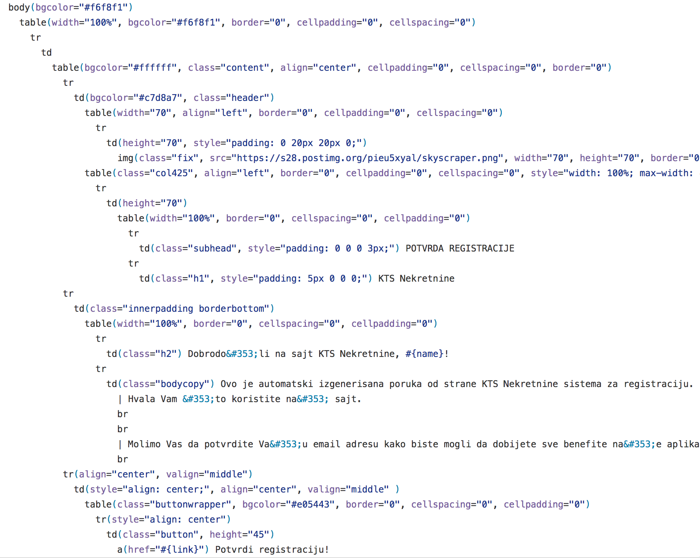
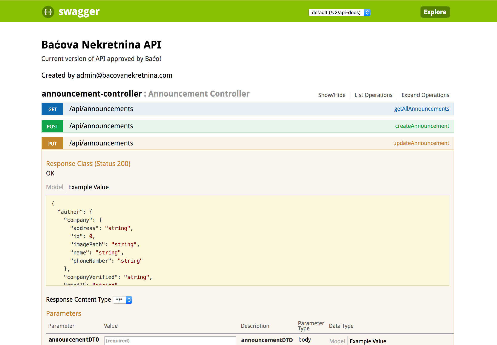

Konstrukcija i testiranje softera
prezentacija
Tim:
Stefan Ristanović
Bojan Blagojević
Dragutin Marjanović
Aleksa Zrnić
Razvoj
Tokom razvoja koristili smo:
- IntelliJ IDEA kao razvojno okruženje
- Spring Framework
- Bootstrap + Angular JS
- GitHub za kontrolu verzija
Sistem za kontrolu verzija
Prilikom korišćenja GitHub-a trudili smo se da ispoštujemo Git Workflow što nam je znatno olakšalo rad na projektu.
Jade
Prilikom slanja mejlova koristili smo Jade kao templating jezik.

Swagger
- Prilikom definisanja API-ja, dodali smo i podršku Swagger-a.
-
Swagger predstavlja moćan open source framework i pomaže pri:
- dizajnu
- korišćenju
- dokumenaciji RESTful API-ja

SonarCube
Na repozitorijumu projekta nalazi se i podešavanje alata SonarCube-a zaduženog za statičku analizu programskog koda.
Okruženje za testiranje
Prilikom pokretanja testova iskoristili smo zanimljivu mogućnost, a to je anotiranje naših testova@Profile anotacijom. Ova anotacija nam pruža mogućnost da za različite profile koristimo
različitu konfiguraciju.
Okruženje za testiranje
- U skladu sa tim za produkciju koristimo MySQL bazu podataka, dok za testiranje koristimo H2 In-Memory bazu podataka.
-
Jednostavan mehanizam za različite profile jeste prilikom konfiguracije application.propeties fajla.
Za
@Profile("test")dovoljno je nazvati application-test.propeties.
 Travis CI
Travis CI
Dodata je podrška za continuos integration. Koristeći alat Travis CI prilikom svakog push-a na
repozitorijum automatski se okidaju svi testovi koji postoje u aplikaciji i u README.md datoteci se pojavljuje
rezultat build-a.
Integracioni testovi
Prilikom integracionog testiranja (≈300 testova) obuhvaćeno je:
- custom metode iz repository sloja
- endpoint-i koji se nalaze u kontrolerima
@WithMockUser.
End-to-end testiranje
- End-to-end (E2E) testiranje je takođe vršeno nad H2 In-Memory bazom podataka.
- Alat za testiranje je Selenium u programskom jeziku Java.